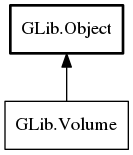

Volume
Object Hierarchy:
Description:
The Volume interface represents user-visible objects that can be mounted.
Note, when porting from GnomeVFS, Volume is the moral equivalent of GnomeVFSDrive.
Mounting a Volume instance is an asynchronous operation. For more information about asynchronous operations, see AsyncResult and Task. To mount a Volume, first call mount with (at least) the Volume instance, optionally a MountOperation object and a AsyncReadyCallback.
Typically, one will only want to pass null for the MountOperation if automounting all volumes when a desktop session starts since it's not desirable to put up a lot of dialogs asking for credentials.
The callback will be fired when the operation has resolved (either with success or failure), and a GAsyncReady structure
will be passed to the callback. That callback should then call mount.end with
the Volume instance and the GAsyncReady data to see if the operation was completed
successfully. If an error is present when mount.end is called,
then it will be filled with any error information.
Volume Identifiers # {volume-identifier}
It is sometimes necessary to directly access the underlying operating system object behind a volume (e.g. for passing a volume to an application via the commandline). For this purpose, GIO allows to obtain an 'identifier' for the volume. There can be different kinds of identifiers, such as Hal UDIs, filesystem labels, traditional Unix devices (e.g. `/dev/sda2`), UUIDs. GIO uses predefined strings as names for the different kinds of identifiers: VOLUME_IDENTIFIER_KIND_HAL_UDI, VOLUME_IDENTIFIER_KIND_LABEL, etc. Use get_identifier to obtain an identifier for a volume.
Note that VOLUME_IDENTIFIER_KIND_HAL_UDI will only be available
when the gvfs hal volume monitor is in use. Other volume monitors will generally be able to provide the
VOLUME_IDENTIFIER_KIND_UNIX_DEVICE identifier, which can be
used to obtain a hal device by means of libhal_manager_find_device_string_match.
Namespace: GLib
Package: gio-2.0
Content:
Methods:
Signals:
Inherited Members:
All known members inherited from class GLib.Object